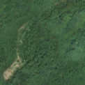
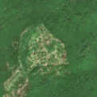

8,3 ha · Gura Siriului, com. Chiojdu
văzută schimbată prima dată pe 27 mai 2026


Autorizația cea mai apropiată nu acoperă tăierea: schimbarea cade în afara parcelei autorizate.
APV 2500011200650 · Ocolul Silvic Ingleby, valabilă 16 feb. 2026 – 31 dec. 2026, la 62 m
Terenul: pădure privată, după amenajamentul silvic publicat.
Ce se vede în poze: În poza detaliată și în imaginea «înainte» zona marcată era acoperită de pădure deasă. În imaginea «după» pădurea a dispărut din mare parte și se vede pământ gol și resturi de lemn, cu margini clare, în timp ce pădurea din jur a rămas verde.